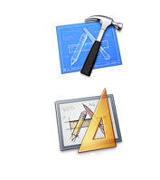

- 概述
- 入门起步
- 必读
- 特色
iOS Developer Library
The iOS Developer Library is your bookshelf for detailed information essential to iOS application development.
|
Topics
Let the iOS Developer Library topics lead you to information organized by subject area. |
Frameworks
Gain a hierarchical development perspective of the different technologies in iOS. |
Tools
Learn how to use the free software development tools that Apple provides to build, debug, and optimize your application. |
Resource Types
Quickly access iOS development resources by Guides, Reference, Release Notes, Sample Code, Technical Notes, and Technical Q&As |
Learn the basics about iOS development by reading these Getting Started documents.
Further your iOS development skills by reading these essential documents.

|
Introduces the development process for iOS applications and describes the core architecture.
|
|
Describes how to build, run, debug, and tune your applications on both the simulator and devices.
|
|
Introduces the iOS user experience and provides concrete guidelines for designing a compelling iOS application.
|
Xcode 4 Helps You Write Better Code
Xcode is the complete toolset for building Mac OS X and iOS applications -- and with Xcode 4, the tools have been redesigned to be faster, easier to use, and more helpful than ever before. The Xcode IDE understands your project’s every detail, identifies mistakes in both syntax and logic, and will even fix your code for you.
Read the Xcode 4 User Guide to learn how to write and edit source code more easily; design user interfaces directly in Xcode; build, debug, and analyze your code; perform source control from within Xcode; and submit your applications directly to the App Store.
Find documents by keyword including title, resource type, topic, framework, and date.
For example:
- security guide
- sample code
- quartz sample code snow leopard
 |